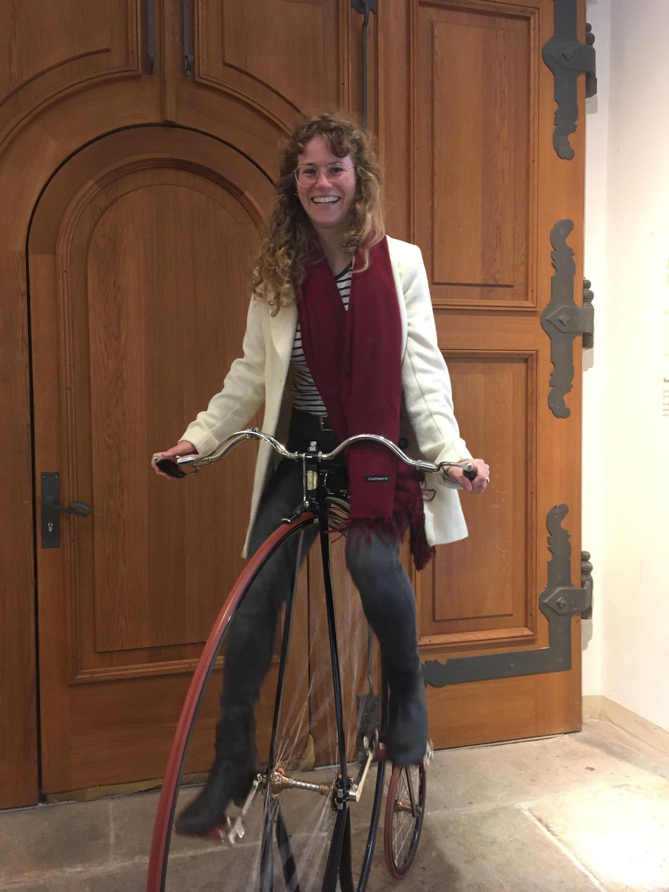

Ich hole das Beste aus Deinem Text.
Du hast so viel Zeit und Arbeit in deinen Text gesteckt. Lass das die Welt sehen!

Ein Lektorat macht Deinen Text runder.
Vielen Lesenden fällt es nicht direkt auf, wenn ein Komma fehlt, eine Schreibweise inkonsistent ist oder im Satz ein Füllwort steht; aber unbewusst passt dann etwas nicht ganz.
Hier komme ich ins Spiel: Ich finde die Kleinigkeiten, über die Lesende stolpern. Ich passe sie an, und der Text wird runder.

Mein Angebot
Im Lektorat passe ich Deinen Text immer so an, dass er den Regeln der deutschen Rechtschreibung entspricht. Zusätzlich kann ich Dir Feedback zu Struktur und Logik geben. Dementsprechend biete ich folgende Pakete an.
Lektorat light
alle Textsorten
ab 1,3 ct / Wort
- Anpassung von Rechtschreibung, Grammatik und Zeichensetzung
- Vereinheitlichung des Schreibstils
Lektorat classic
wissenschaftliche Texte
ab 2,6 ct / Wort
- Anpassung von Rechtschreibung, Grammatik und Zeichensetzung
- Vereinheitlichung des Schreibstils
- Anpassung des Schreibstils an die Literaturart
- Rückmeldung zu Logik, rotem Faden und Vollständigkeit
Sollen wir loslegen?
Deinen Text überarbeite ich gerne für Dich.